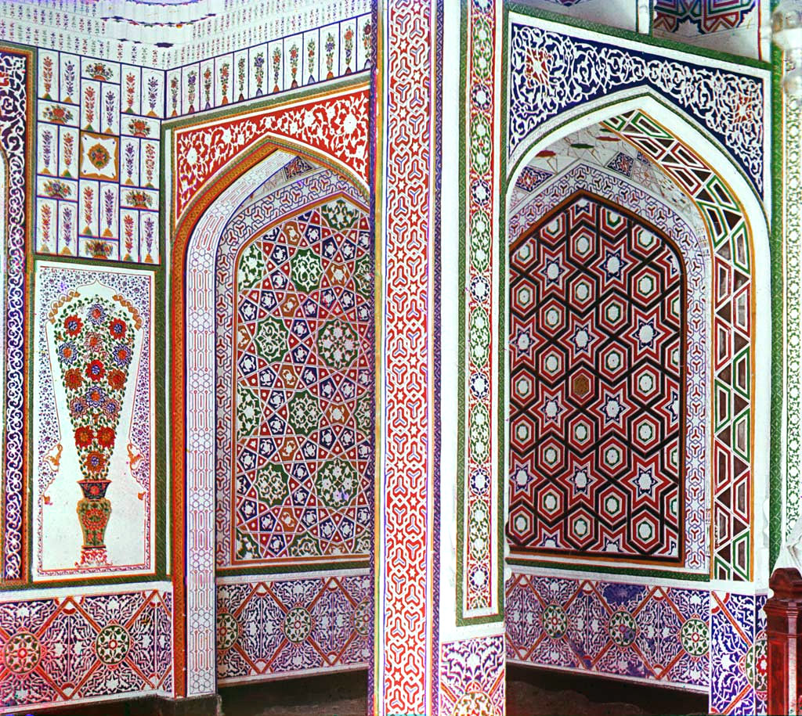
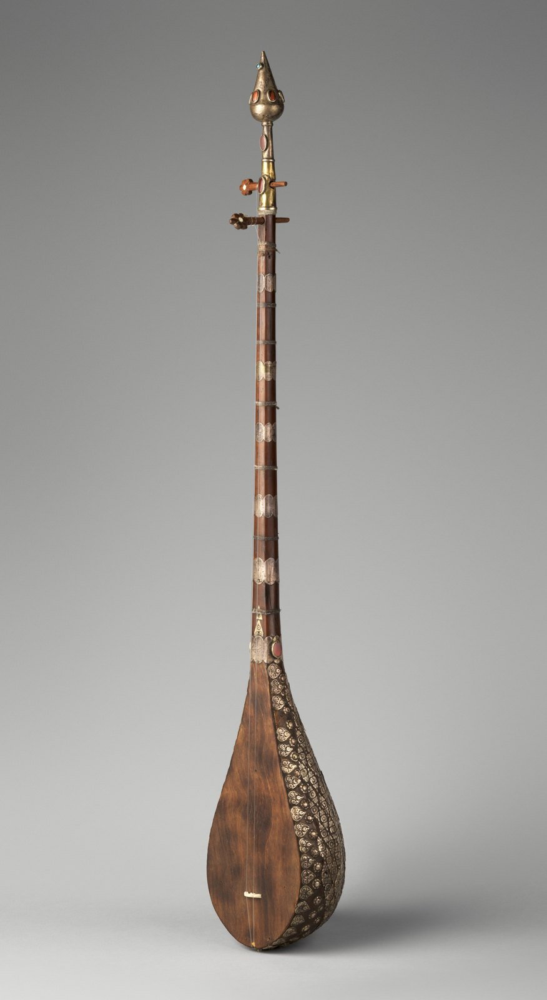
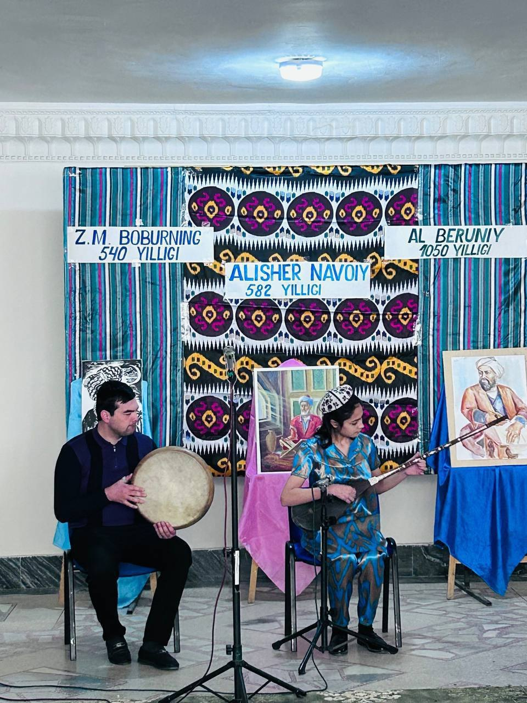
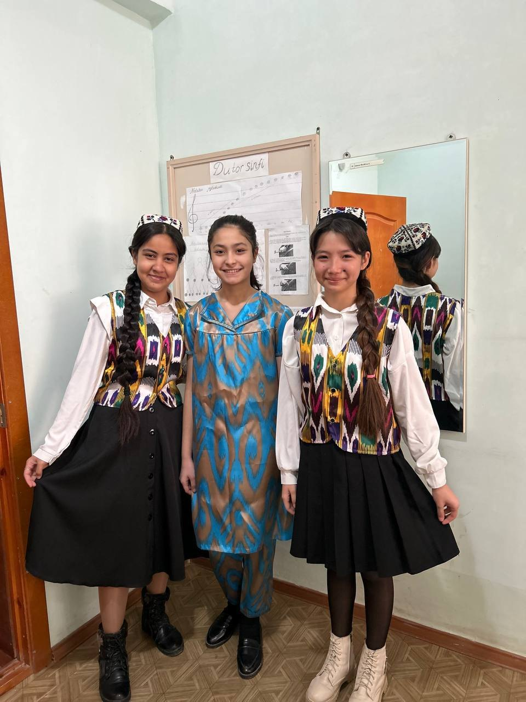

Asal Raximova
Painter, dutar player and young activist from Samarkand, Uzbekistan. A high school senior applying to university abroad.
Innovator. Performing artist. Activist.
Hey, I’m Asal
I’m a high school senior from Uzbekistan, blending my love for politics, traditional music and visual arts.
I’m passionate about understanding societies, challenging inequalities, and using creativity to make a difference in my community. I paint in watercolour, gouache and graphite, play the dutar, and spend the rest of my time on the questions of how people live together and who gets left out.
- From
- Pastdarg’om district, Samarkand region, Uzbekistan
- School
- Registan School, a private school in Samarkand, senior year
- Art and music
- Children’s Music and Art School No. 26: fine art 2018–2023, dutar 2021–2025
- Interests
- Politics and society, Uzbek classical music, painting

Paintings and drawings
Nineteen works in watercolour, gouache, acrylic, graphite and ink. Choose a colour from my palette to see the paintings it runs through.
Find by colour
19 works
No works in this colour yet.
One pear, five times
A pear is the first thing an art student is asked to draw. I keep returning to it whenever I try a new medium: it shows how light, weight and colour change from graphite to watercolour to gouache.
- Graphite
- Watercolour, layered
- Watercolour, wet into wet
- Watercolour, loose
- Gouache
Five years of art school
From 2018 to 2023 I studied fine art at Children’s Music and Art School No. 26 in Samarkand district, alongside my regular school. I graduated with 5, the top grade, in all seven subjects.
- Speciality: fine art5
- Painting5
- Composition, easel5
- Composition, applied5
- Sculpture5
- History of fine art5
- Computer graphics5
Dutar and shashmaqom
The dutar is the two-stringed lute of Uzbek classical music. From 2021 to 2025 I studied traditional performance on it at the same school, including maqom and shashmaqom, the six-part classical repertoire of Bukhara and Samarkand, and again finished with 5 in every subject.
- Speciality: dutar5
- Solfeggio5
- Ensemble5
- Maqom and shashmaqom5
- Music literature5
- General piano5
- Elective subject5
- 1st place Dutar performance, “Five initiatives in the holidays” contest, School No. 52, 2022
- 2nd place District stage of the “Iqtidor” school ensemble competition, 2025

Politics and community
Art and music taught me to look closely. Politics is where I try to use that: to understand why some people are heard and others are not, and to help change it where I live.
- Certificate of participation Social event organised by School No. 52
- Certificate of honour Excellent grades and exemplary conduct, school year 2024–2025
Diplomas and certificates
Every award and certificate, oldest first. Select one to read the original.
Write to me
For admissions questions, the original documents or a conversation about my work, email is best. I answer within a day.
raximovaasal51@gmail.com- Phone
- +998 93 973 13 09
- @rrrraamii____
- Based in
- Samarkand, Uzbekistan (UTC+5)

